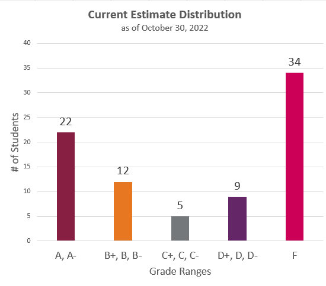

I have calculated your course progress as of 11:59 PM on October 30, 2022. You can find the estimate in the rubric for the Current Course Grade Estimate assignment. You should be able to find it on your Grades page in Canvas.
This estimate is only tentative and will change as/if you complete additional work in the course. The estimate is calculated according to the Effort Expectations for Each Grade Level.
The rubric for the Current Course Grade Estimate is based on the Effort Expectations chart. The different categories listed in the rubric are not equivalent. Full Drafts is the most important category. It becomes your base grade and then I move your estimate up or down based on the other two categories (Weekly Activities and Check-In Surveys).
The percentages that are listed in the rubric come from the bottom of the Grades page in Canvas (see an example on the Checking Your Progress page. I marked the percentage on your rubric according to the number listed. For instance, if you had 85.71% for Weekly Activities, I marked the B rating for that category in the rubric. I added the ratings strictly according to the percentage cut-offs. There is no rounding or bumping up.
I do have one strict guideline: If you have an F for the Full Drafts category, you have an F as your course estimate. You cannot pass the course without earning a Complete on at least TWO Full Drafts.
Use this documentation from Canvas for help finding the rubric:
The rubric indicates where your effort is right this moment. The estimate doesn’t influence your course grade at all. It’s just a snapshot of the current moment.
As you continue working in the course, the numbers on your Grades page will change. You can determine your own grade estimate at any time by following the instructions for Checking Your Progress.
Here is a bar graph showing the current distribution of the grade estimates. Basically it shows an upside-down bell curve. Either you’ve done the work in the course or you haven’t. If you have been doing the work, you likely have an estimate in the A or B range. If you haven’t been doing the work, you probably have an estimate in the F range.
